Discover Powerful Apps on the Appstore!
Unlimited apps for the price of nothing! Black Store provides 30+ rare hidden applications directly from the AppStore that have been carefully picked to benefit you!
A Library of Hidden Applications
Discover a variety of Apps not even listed on the website! These apps were previously banned / removed / taken down to prevent further downloads. Fortunately, Black Store was early!
Temporarily Not Working
Found Any Applications?
Help Out By Submitting It Through Email or Social Media. Disclaimer: You will get full acknowledgment for the app
App Updates
Specific apps that have been removed and added onto the website can be found below. The list of apps are ordered by date making it much easier for you! Remember, if the apps you missed out are on the page, you can download all of it from the public Apple ID.
Categories
Music Apps
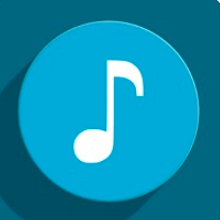
If you looking for best music? You found the right app to search and hear music online. Musica FM is a unique Radio App with best stations and categories. Enjoy music everywhere, at home, at work when you running. No matters Musica FM will help you to be on right vibes.
Audiomack is a FREE streaming music app, built to let you stream and download the hottest new music & mixtapes in Hip-Hop, Electronic, and Reggae. Every song is downloadable - with or without wifi! Audiomack has a totally proprietary Trending section that shows you the hottest, most buzzing new muisc and artists daily, before anyone else. Audiomack gives you the hottest new music!
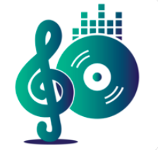
Just put your music into the Dropbox and Google Driver, connect to the app and play your music enjoy!
Radio Greece brings you the latest, up-to-date stations all with just one click. It also works in non-radio wave receiving areas where the cellular network is covered. The application runs in the background and the screen is off.

Best music radio player Young Radio Pro is a music fm collections from all over the world. We have a detailed breakdown of music and radio, including: Pop, Rock, Hip Hop, Latin, Funk, Sertanejo, Reggaeton, R&B, Jazz And most popular music and fm station.
Listen your music always, even offline, with every device. Search the songs you love and create your own library. Discover new tracks from the one that are recommended. Keep updated with the trends and rankings.
Young Radio+ is the best music radio app, you can listen all music and fm stations unlimited with this awesome app. Download Young Radio+ today and start discovering you love voice.
Music Mate Yolk is the best offline music radio player. You can listen to all genres music radios from all over the world. You can listen to top popular radio stations in all countries too.
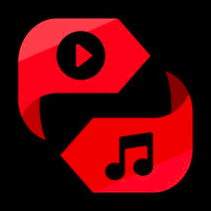
This application is the most powerful video and audio converter. Use it to convert and play any video and audio on your iPhone, iPod or iPad. Convert video files to audio format! With a few clicks this application can extract the audio track from the video file and then convert it to AAC, MP3, AC3, etc.
Trending is the best way to listen to music, podcasts, and watch videos!
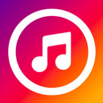
Musica is the best way to listen to music on iPhone/iPad/iPod.
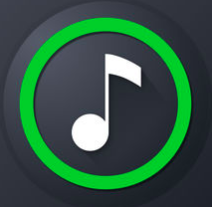
Listen to music YT's new level of music, now you can stream and explore the most popular titles from top world list. add your favorite song and enjoy it.
Download your music all-in-one. Explore over 30 million hot tracks and albums. Stream: Get access to millions of local and international music. Stream it via 2G/3G/4G, on your home, office or public wifiand download anything you want on to your phone, Download: Search for millions of songs by title or artist or album name and play your song instantly. Enjoy access to music tailored to you plus see the latest music, charts and playlists, Play Offline: Have the ability to stream music on your device without an active data connection.
RS Player is a video & music player. Reach millions of music, Search with suggestions, Browse latest music lists, Create/Edit your own playlist, Choose video quality, Listen music in background.
Spinrilla, the 800-lb gorilla of hip-hop mixtapes. Spinrilla is the world’s first mixtape music app, giving you all hip-hop, all the time. Discover independent and emerging hip-hop artists and hear the next big track before anyone else. Spinrilla puts one of the world’s largest catalogs of independent hip-hop in the palm of your hand, with new music added daily from your favorite underground artists.
My Mixtapez your plug for all the latest music. Key features: Download Unlimited Mixtapes, Stream Unlimited Mixtapes, Share music statuses with your friends via social networks, Stream selected Videos, Find the Latest Mixtapes
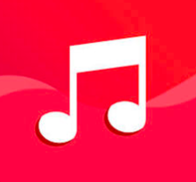
Improve your mood and recharge yourself with energy! If you love activity and motivation, then this player is for you! Choose your style and listen to music in training, in the car, in the subway...
Download music for free and legally with MonkingMe. With this app you will be able to listen to music for free, download all the songs for free and share them with your friends. You will also stay tuned to your favorite artists. Meanwhile, artists win too. Make piracy unnecessary.
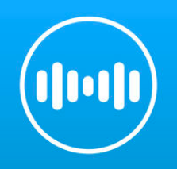
Tunepro Music allows you to listen and enjoy variety of genres like Classical, Rock, Pop, instrumental, Hip-Hop, Songs, Music, Concerts and other variety of programs made available by various Internet Radio Broadcasters across the world.
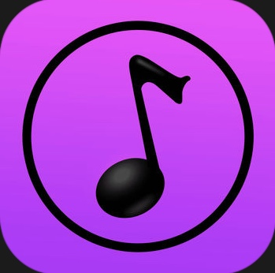
Music HD is the best way to listen to music on iPhone/iPad/iPod. Make your own playlists. Free on mobile. 1. Play any artist, album, or playlist in shuffle mode. 2. Play any song, any time on any device. 3.Listen offline. 4.Get High sound quality.
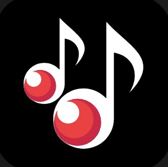
Tuner Radio is the best music, video, radio, white noise, nature sound player. We have millions of songs in our library. 1.You can search song name or artist name to find music. 2.Popular music recommend on home page. 3.Newest release music help you follow music trends. 4.Most popular artist in your country and world.
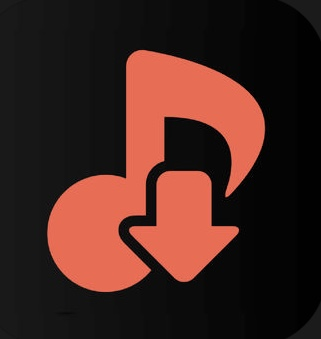
Free MP3 music downloader and offline and online music player. Smart player and fast MP3 downloading engine. Beautiful dark theme. All features are absolutely free! The application provides downloading and streaming for non-commercial use only. All music content is legal and is under Creative Commons license. There are more than a million MP3 songs to download.
The best ever OFFLINE MUSIC PLAYER. And the most complete Radio collection. Download SkyBeat today and start building your biggest collection and listening to your favorite music.

Millions of unlimited music and fm station from all over the world. Best app to discover music & radio you love, and build your biggest, best ever music collection. Music Radio will keep playing while other apps are in foreground.
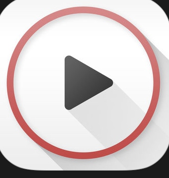
Free Music for SoundCloud is a powerful third-party music player client, powered by SoundCloud API, and it’s absolutely FREE! Enjoy your favorite SoundCloud audio and explore trending music – any time, on the go!!
Movie Apps
Simple and lightweight TV shows tracker. Cinema Popcorn is a mobile app that does many things, but primarily keeps track of TV shows and movies you watch. Some people like to check i n from their phone, so we enable that too.
Instantly streaming free videos and movie previews on your device. No subscription required, and works on iPhone, iPod Touch and iPad.
Stream free movies and TV shows on your iPhone and iPad! Popcornflix is 100% legal, no subscription required. Experience feature-length, on-demand movies and TV shows with way fewer ads than regular television. These movies and TV shows showcase some of the biggest stars in the world, including Brie Larson, Ben Affleck, and Robert Downey, Jr.
Animate Max is the best in the world of anime and in a whole new way we offer you the application of AnimeMax specialized in the field of movies and anime series Where the application provides sufficient information and adequate for any series you want Such as age assessment, when it was issued, how many episodes, whether or not there are currently, and many more.
Anime Claud to follow the new Anime. The application contains anime lists sorted by season: Classification and reconstruction, Follow the news of Anime, Search for anime, Continuous daily update, The possibility of adding anime to the favorites, Login to comment on Anime, New benzol alerts, And more.
The application of Avlami Plus is a specialized application for foreign films, which reviews a lot of information about the film in addition to a propaganda show about it. The application in design is beautiful, easy and far from any complexity. It helps you search for any movie to find out what it is, as well as the ability to vote on the movie to help other people search for movies they watch.
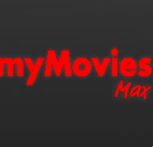
The application of Avalami Max is a specialized application for foreign films, which reviews a lot of information about the film in addition to a propaganda show about it. The application in design is beautiful, easy and far from any complexity. It helps you search for any movie to find out what it is, as well as the ability to vote on the movie to help other people search for movies they watch.
You can now discover Top rated, Popular, Upcoming movies & tv shows, Find detailed informations about them. App Features: - Discover Top Rated, Popular, Up Coming Movies - Top Tv Shows - Reach out to nearby theaters to your place - Add Movies or Tv shows to Favorites - Get any movie in iTunes - Search Movies by Voice
File Manager Apps
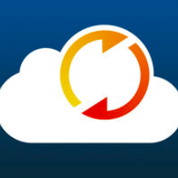
BrowserPro is a total solution to keep your office files in your phone and use them anytime, anywhere you want. BrowserPro contains amazing file manager which lets you store, view and manage documents on your iPhone, iPad and iPod. It has an amazing built in document viewer and zip extractor.
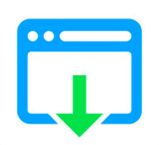
With iSaveit you can download and use any files on your iPhone, iPod or iPad. It also allows you to upload the files to pCloud.
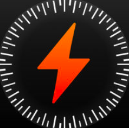
Private Browser is fast multi-tab browser with unique privacy features for secure internet surfing. Exclusive moderated ad blocking lists and night mode reduce distractions and keep your focused on content.
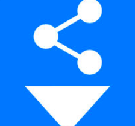
Using Share & Download app you can download free video from PEXELS video. So that downloaded video can be used to make beautiful presentation on your device.
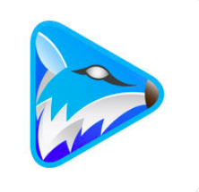
FoxFM is giving you freedom to download your files from cloud services like Dropbox, Google Drive and OneDrive. You can view, manage your files and unexract archive files and extract as an archive your files. Also you can play your media files on the background and convert your videos to audio or to ringtone.
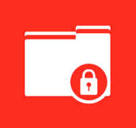
The BEST and MOST convenient privacy app to protect your private files including PHOTOS & VIDEOS! "Secret Files 108" provides a secure Private Password to keep your secret videos 100% privately. Your videos & photos are ONLY stored in your "Secret Files 108" and no one can touch them except yourself!

Application will help you to import and watch the video and audio files your stored in the services storage cloud dropbox and box and google drive, as I am this application allows you to lift the image to your account in storage cloud .. some features application: Supports the iPhone, iPad versions of modern, Supports lock the application and protection of your files, Enabled in TouchID and FaceID.
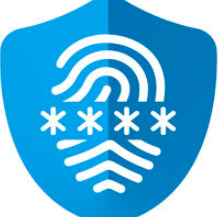
Hide your Secrets simply called HYS which protects your media files with scrambled file hash algorithm like BANK and MILITARY level. Nobody can access your files even if you lose your phone. App supports iPhone, iPad and iPod. You can import your files from iOS Photos, Camera, iCloud Drive, Dropbox, Google Drive, OneDrive, Box. Powerful control of your files with Wifi Connect!
Video Downloader Apps

iVideo is a free and smart third party app, driven by YouTube® API. Feel a new Video-Experience - also off line: Best Video-Client and Video Player for searching and manage new videos, Millions of people still watch videos.
Download and browse files and documents on your iPhone, iPod or iPad like on your computer. No limits on storage or downloads!
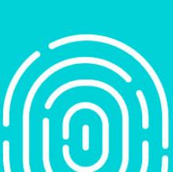
“Private Browser – Data Saver” is the #1 free secure web browser which allows you to browse the web privately and easily store your favorite videos, photos, and music on your iPhone, iPad, or iPod – for FREE. Securely browse the internet on any iOS device with our secure, multi-tab browser. Transfer and store your favorite media content in a password-protected folder for offline consumption, or with our in-app video and audio player.
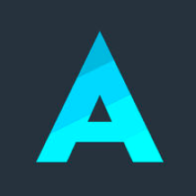
Aloha Browser is a fast, free, full-featured web browser that provides maximum privacy and security. Millions of users have already tried this app and prefer it over the other browsers for the clean interface, ease of use, and its awesome features. 5 stars - is the average rating in most countries.
EASIEST WAY TO MANAGE VIDEOS. Save your favorite videos and play them offline anytime anywhere.
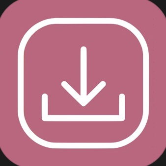
Copy your link and run the app, after clicking paste and download, your file (photo, video, pdf or any other type) will be downloaded to your device. You may carry on with what you were doing, app also can download on background!
Sport Live Apps
This app allows you to watch any cricket match no matter where you are. You just need to have an internet connection and a Smartphone and you will be good to go. Watch your favourite cricket series such as The Ashes,t20, One day internationals, ICC World Cup, ICC Champions Trophy, ICC Womens World Cup, Indian Premier League(IPL) many other on the go without any interruption on your mobile phone with Cricket.
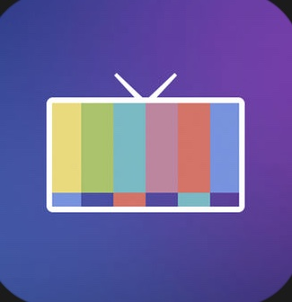
Live TV, anywhere in your home. Channels lets you watch, pause, and rewind local or cable TV directly on your iPhone or iPad. Learn more about Channels at http://getchannels.com. Channels requires an HDHomeRun networked TV tuner to watch live TV on your iPhone, iPad, or iPod Touch. Learn more about how this works below.
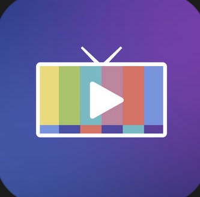
Cut the cord without missing your shows. You don't have to lose your DVR just because you canceled your cable. Channels DVR lets you watch live and recorded TV on any TV or device in your home, or even away from home! It's the cord cutting tool that your family has been looking for. Learn more about Channels DVR and how it works at http://getchannels.com/dvr.
Other Apps
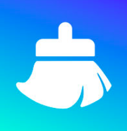
Clean your phone's space, quickly and easily. More Features: Network Speed Test - Test your connection speed, like download, DNS, and WiFi, Device Info - let you know the detailed information about your device with real-time measurements. NOTE: This app cannot clean your device memory.
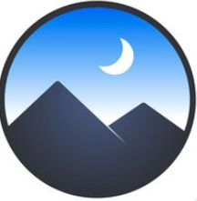
Create, explore and share elegant wallpapers. Clarity Wallpaper is your ultimate wallpaper base in which you can: Turn your photos into perfect wallpapers within seconds with Clarity’s amazing wallpaper editor, Browse and save high-quality wallpapers selected by Clarity or creative illustration works created by Clarity official. We’ve made sure these wallpapers perfectly fit your device. Some of them are so unique that you can not find them anywhere else, Share your own photography works or designs with Clarity Gallery, good wallpapers worth spreading.
A central hub for all your files. Read, listen, view, annotate almost anything you want on your iPad and iPhone. Files, documents, books, any content is at home in Documents by Readdle. It’s the Finder for iOS you’ve always wanted.
Archive of Banned Apps
History of Apps